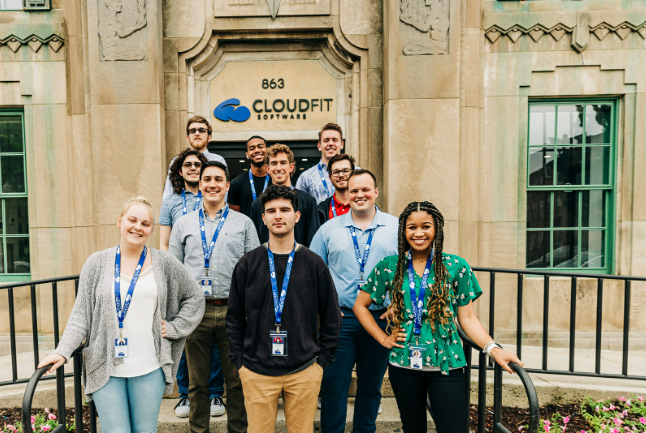

Workforce Development And What It Actually Looks Like
A practical breakdown of how JobFit moves learners from exploration to job-ready project execution.
This newsroom highlights outcomes across all JobFit pathways and partner collaborations, with JobFit at the center of each story.
A practical breakdown of how JobFit moves learners from exploration to job-ready project execution.

Fifteen participants completed pathway goals and presented portfolio evidence.

New organizations joined the placement network ahead of the next cohort cycle.